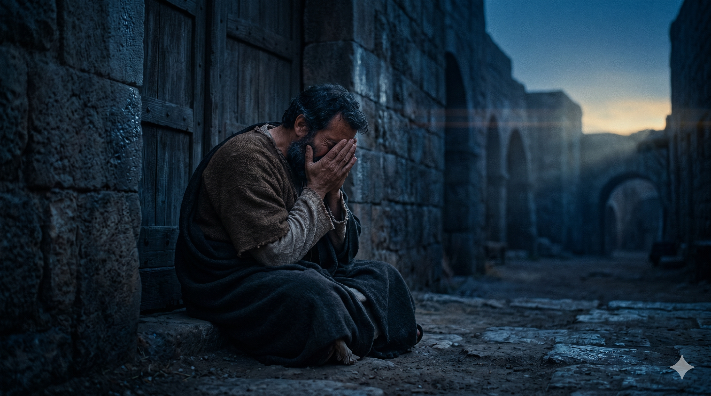

대제사장의 뜰 모닥불 옆에서 시녀의 질문을 받는 베드로, 불빛이 그의 얼굴을 비추고 그 눈에는 두려움이 가득하다.
그가 저주하며 맹세하여 이르되 나는 그 사람을 알지 못하노라 하니 곧 닭이 울더라. 이에 베드로가 예수의 말씀에 닭 울기 전에 네가 세 번 나를 부인하리라 하심이 생각나서 밖에 나가서 심히 통곡하니라. — 마태복음 26:74-75
예수께서 대제사장 가야바의 집에서 심문을 받으시던 그 밤, 베드로는 멀찍이 따라와 뜰 안 모닥불 곁에 앉아 있었습니다. 죽기까지 함께하겠다던 맹세가 겨우 몇 시간 전의 일이었습니다. 그런데 한 여종이 "너도 갈릴리 사람 예수와 함께 있었도다"라고 말하자, 베드로는 이를 부인합니다. 한 번, 두 번, 세 번 — 마지막에는 저주까지 하며 맹세하여 "나는 그 사람을 알지 못하노라"라고 외쳤습니다. 갈릴리 출신임을 드러내는 말투조차 그를 위협하기에 충분했습니다. 무장한 군대 앞에서 칼을 뽑던 그 사람이, 이제 밤 뜰의 시녀 앞에서 무너졌습니다.
세 번째 부인이 끝나는 순간 닭이 울었습니다. 그때 베드로는 주님의 말씀을 생각했습니다. 성경은 그가 "밖에 나가서 심히 통곡하니라"고 기록합니다. 이 통곡은 단순한 후회가 아니었습니다. 그것은 자기 자신의 민낯을 정면으로 마주한 인간의 울부짖음이었습니다. "죽어도 배반하지 않겠다"던 그 자신감이 얼마나 허약했는지를 닭 울음 한 마디가 적나라하게 드러냈습니다. 그러나 주님은 이 무너짐을 미리 아시면서도 베드로를 포기하지 않으셨습니다. 이 통곡이 훗날 그를 전혀 다른 사람으로 세우는 씨앗이 될 것이었습니다.

뜰 밖으로 나와 무너져 얼굴을 손으로 감싸 쥐고 통곡하는 베드로, 새벽빛이 아직 오지 않은 어둠 속에서.
베드로의 부인은 신앙의 역사에서 가장 유명한 실패 중 하나입니다. 그러나 이 실패는 동시에 가장 강력한 회복의 서막이기도 합니다. 우리 삶에도 "닭 울음 소리"와 같은 순간이 있습니다. 자신이 한 말과 행동 사이의 간극이 너무 커서 더 이상 자신을 속일 수 없는 순간, 내 안의 두려움과 연약함이 고스란히 드러나는 순간입니다. 그럴 때 많은 사람들이 수치심에 사로잡혀 스스로를 포기합니다. 하지만 베드로는 통곡했습니다. 자신의 실패를 외면하지 않고, 그 앞에서 무릎을 꺾었습니다.
진정한 회개는 자기혐오가 아닙니다. 그것은 하나님 앞에서 내 실제 모습을 인정하는 정직한 행위입니다. 베드로의 눈물은 그를 파괴하지 않았습니다. 오히려 그 눈물이 마른 후, 부활하신 주님은 "네가 나를 사랑하느냐"며 세 번이나 다시 물어 그를 회복시키셨습니다. 우리가 실패를 인정하고 통곡할 수 있다면, 주님은 그 자리에서 반드시 우리를 다시 세우십니다. 쓰러진 자리가 곧 일으켜지는 자리입니다.
당신의 실패가 당신을 정의하지 않습니다.
베드로처럼 통곡할 수 있다면, 그것이 이미 회복의 시작입니다.
닭 울음 소리가 들릴 때 — 도망치지 말고 눈물로 주님 앞에 서십시오.